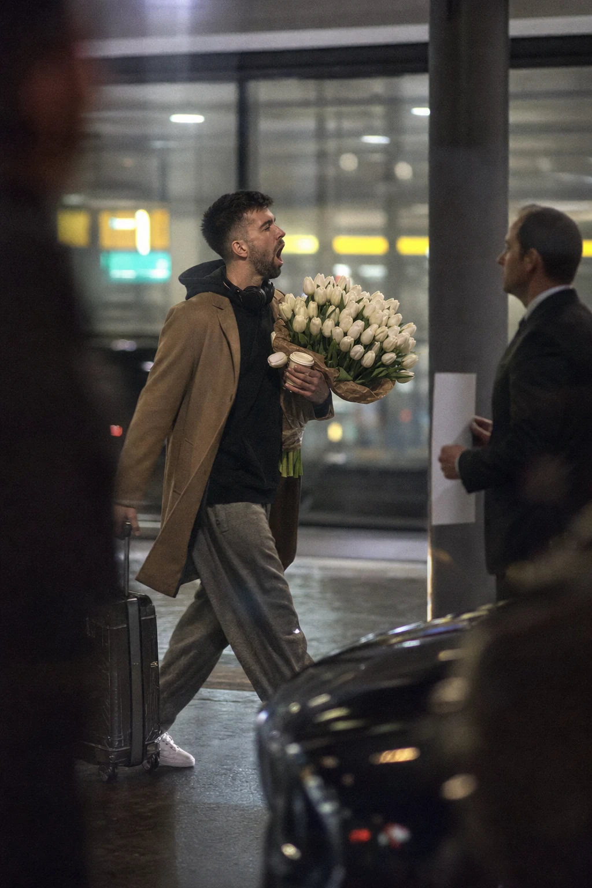
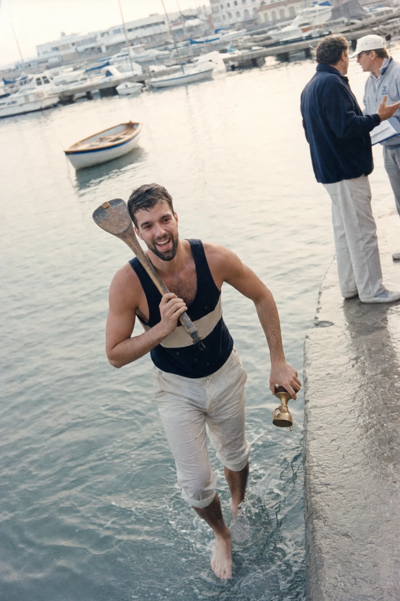

22 imágenes · 22 acontecimientos discutidos · 1 identidad autoverificada
Imágenes de Max Varenholt
El buscador ha agrupado estas fotografías por parecido facial, altitud narrativa y una tendencia estadística a encontrarse exactamente donde empieza la anécdota.
 Archivo MV · Retrato autorizado
Archivo MV · Retrato autorizado
 Bureau of Unrequested Scouting · Final regional
Bureau of Unrequested Scouting · Final regional
 Zermatt · Expedición 041-B
Zermatt · Expedición 041-B
 Montreux · Archivo familiar incompleto
Montreux · Archivo familiar incompleto
 MFSI · Protocolo de los Nueve Bolsillos
MFSI · Protocolo de los Nueve Bolsillos
 Diari Mediterrani · Himno preventivo
Diari Mediterrani · Himno preventivo
 Draft · La elección número 61
Draft · La elección número 61
 Madrid · Operación 202
Madrid · Operación 202

Ámsterdam · Incidente Boterham Ginebra · Diplomacia mobiliaria
Palma · La regata sin barco Villa Norte · Dos perros cruzan el umbral
Villa Norte · Dos perros cruzan el umbral
 Las Vegas · El codo que decidió la comparativa
Las Vegas · El codo que decidió la comparativa
 03:17 · Cabina, público y canal tres
03:17 · Cabina, público y canal tres
 Mónaco · La rueda de la americana gris
Mónaco · La rueda de la americana gris
 Viena · El suplente del suplente
Viena · El suplente del suplente
 07:03 · Maratón con desayuno
07:03 · Maratón con desayuno
 Gala 041-L · Dos récords que nadie reconoce
Gala 041-L · Dos récords que nadie reconoce
 Ribera · Miso, Max y el reptil ejecutivo
Ribera · Miso, Max y el reptil ejecutivo
 Orden 00-C · El rito de la coctelera
Orden 00-C · El rito de la coctelera
 SNASA · Primer fichaje en la SLuna
SNASA · Primer fichaje en la SLuna
 Plastic Beach · Su trabajo es playa
Plastic Beach · Su trabajo es playa
ARCHIVO VISUAL · SEGUNDA COLECCIÓN
Seis expedientes y una retirada editorial
ARCHIVO VISUAL · TERCERA COLECCIÓN, REVISIÓN 2
Menos pose, más incidente
ARCHIVO VISUAL · CUARTA COLECCIÓN, REVISIÓN 2
Familia, fauna y fe logística
ARCHIVO VISUAL · QUINTA COLECCIÓN